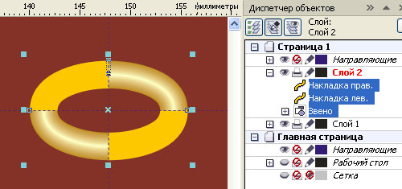

Цепи и цепочки
Те, кто рисовал или пытался рисовать цепочки, знают, что это довольно непросто. Ведь каждое звено в месте соединения звеньев должно быть одновременно как бы в разных слоях, то есть участок одного звена «ныряющий» в другое звено, располагается над этим звеном (на уровень выше), а участок того же звена, «выныривающий» из другого, располагается под ним (теперь уже на уровень ниже), то есть один и тот же объект должен быть одновременно и тут и там.
Люди уже давно придумали, как это преодолеть: делают так называемую заплатку, которая вырезается из участка того звена, которое фактически располагается ниже другого, и перекрывают этой заплаткой место пересечения с другим звеном, создавая иллюзию того, что в этом месте звено расположено выше другого.
В данном уроке суть способа та же, но используются некоторые рациональные приёмы работы плюс особенности программы CorelDRAW, позволяющие выполнять эту задачу настолько легко, что рисование любых цепей и цепочек – это уже не работа, а просто музыка!
Главное, будьте внимательны и выполняйте всё точно в соответствии с указаниями, изложенными в уроке.
Прежде, чем начать работу, выполните одну полезную установку, о которой я уже говорил в других уроках, и которая будет полезна всегда: установите смещение копии равным нулю (Инструменты – Параметры – Документ – Общие).
Создайте изображение звена цепи. Затем мы создадим две заплатки, как показано на рисунке ниже (для наглядности заплатки показаны другим цветом), а две заплатки позволяют получить универсальный элемент цепи, копируя который, вы можете не задумываясь смещать копию как в одну сторону, так и в другую, и всегда перекрытие будет правильным.

Итак, создайте два дубля звена (звено выделено и просто нажмите два раза Ctrl +D).

Выделите одну копию и обрежьте как показано на рисунке ниже.
Выделите вторую копию и обрежьте как показано на рисунке ниже.
Вот такой пакет из трёх объектов – это и есть универсальный элемент цепи. Главное – не сгруппировывайте, выделите все три объекта и в дальнейшем выделение не снимайте (это важно!).
Создайте дубль этого пакета (Ctrl + D)
Сместите полученную дублированием копию в сторону, используя клавиши со стрелками или мышью (можно с нажатой Ctrl для строгого перемещения по горизонтали или по вертикали). Для удобства перемещения с помощью клавиш со стрелками настройте шаг перемещения поменьше (например, 0,1 мм), а большой шаг перемещения 10 х 0,1 мм (клавиши со стрелкой с нажатой Shift). Для тех, кто не знает: Инструменты – Параметры – Документ – Линейки.
Затем опять нажмите Ctrl + D, при этом получится новая копия (дубль) с повтором последнего выполненного смещения.
Нажимая подряд Ctrl + D столько раз сколько нужно звеньев Вы получите прямолинейную цепочку.
Если нужно получить цепочку по кривой линии, то после очередного нажатия Ctrl + D можете добавить небольшой поворот звена, при этом для следующего дубля будет повторено смещение с поворотом, если очередной дубль занял неудачное положение, можете корректировать положение, главное – не снимать выделение, и можете снова дублировать.
На следующем рисунке показано, что последнее, замыкающее звено сопрягается с первым с правильным перекрытием.
Достоинство описанного метода в том, что звенья цепочки можно смело перемещать, поворачивать, добиваясь нужного их положения, не опасаясь, что заплатка не скроет место перекрытия. Но даже если это и произойдёт, можно смело удалить заплатку, создать новый дубль звена, и обрезать новую заплатку как надо.
Главное, о чём надо помнить при таких действиях, это то, что смещать надо весь пакет (из звена и двух заплаток), поэтому для выделения пакета используйте обводку в рамку, а чтобы не зацепить лишнее, например фон, уберите его на другой слой и сделайте на время нередактируемым.
Специально для CDRPRO
Копирование и публикация любым способом данного урока или любой его части без письменного согласия автора запрещено.
Чтобы не было видно краёв заплаток, звено цепи надо рисовать как контурную группу линий (абрисов), не переводить в объекты. Демонстрирую на следующем рисунке с большим увеличением
Что ж, в принципе понятно. Возможность последующего редактирования расположения звеньев цепи, действительно, радует. :)